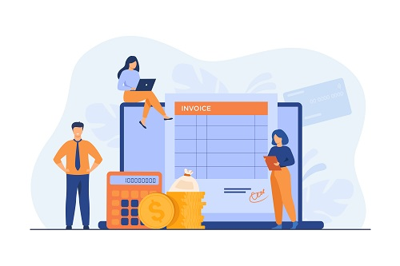
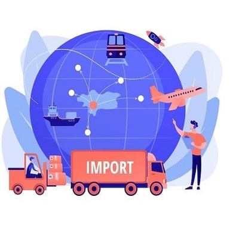

Primeros pasos
Aburrido de los tramites? No te preocupes! Lo hacemos por ti!
- Aperturas y clausuras de empresas
- Constancia de documentacion
- Certificado unico
- Certificado de credito
- Facturacion electronica
- Gestion de convenios
Recursos Humanos
El área de Recursos Humanos cubre los procesos operativos relacionales con las nóminas del personal, para que nuestros clientes se enfoquen en el manejo de sus operaciones y se dediquen de lleno a su negocio.
- Nómina de Empleados, preparación y gestión de la nómina de empleados. Esto implica calcular salarios, deducciones, impuestos y otras retenciones relacionadas con los recursos humanos.
- Seguridad Social, gestion de los trámites relacionados con la seguridad social, como inscripciones, altas y bajas de empleados en el BPS (Banco de Previsión Social) y el MTSS (Ministerio de Trabajo y Seguridad Social).
- Cumplimiento Legal, asegurando que la empresa cumpla con todas las leyes laborales y regulaciones vigentes en Uruguay.
- Gestión de Beneficios, administracion de los beneficios para empleados, como seguros de salud, planes de jubilación y otros programas de bienestar.

Outsourcing Contable
El Outsourcing es una tendencia que se está imponiendo en la comunidad empresarial de todo el mundo, permitiendo a los líderes empresariales focalizarse en el giro de sus negocios, maximizando su eficiencia y permitiendo a las empresas responder con rapidez a los cambios de su entorno.
- Preparar conciliaciones bancarias.
- Elaborar análisis de cuentas
- Gestión activo fijo
- Gestión de inventarios
- Gestión de proveedores
- Preparar Estados Financieros: Balance, Estado de Resultado, Informes de Gestión. Trabajamos con herramientas modernas y sencillas para ti
Gestión y Asesoría Tributaria
La asesoría tributaria es fundamental para garantizar el cumplimiento de las obligaciones fiscales y para optimizar la posición fiscal de los individuos y las empresas. También puede ayudar a evitar problemas legales y financieros relacionados con los impuestos.
- Planificación Fiscal; planificar estratégicamente sus asuntos fiscales. Esto implica identificar oportunidades legales para minimizar la carga fiscal, como la optimización de deducciones y créditos fiscales.
- Cumplimiento Tributario, asegurarse de que los clientes cumplan con todas las obligaciones fiscales, presentando declaraciones de impuestos precisas y a tiempo. Esto incluye impuestos IRPF, IRAE, IVA, IP, IMESI, IMEBA, y otros tributos locales.

Interesado en importar para reducir costos?
Brindamos servicios que ayudan a las empresas a cumplir con las regulaciones y obligaciones fiscales relacionadas con las importaciones.
- Clasificación Arancelaria, determinar la clasificación arancelaria adecuada para los productos que desean importar. Esto es fundamental para calcular los derechos de importación y otros impuestos aplicables.
- Valoración Aduanera, Asesorar sobre la valoración de las mercancías importadas, asegurándose de que se cumplan las normas aduaneras y que se determine correctamente el valor en aduana de los productos.
- Cálculo de Impuestos y Aranceles, calcular y gestionar los impuestos y aranceles que deben pagarse en relación con las importaciones, como el IVA, Anticipo de IVA, los derechos de importación y otros tributos aduaneros.
- Control de Costos y Gastos, llevar un registro de todos los costos relacionados con la importación, como gastos de transporte, seguros, almacenamiento y manipulación, para una correcta contabilización y presentación de informes financieros. La importación es un proceso altamente regulado en Uruguay, nuestro papel es fundamental para garantizar que las empresas cumplan con todas las obligaciones legales y fiscales, al mismo tiempo que optimizan los costos y maximizan la eficiencia en sus operaciones de importación.